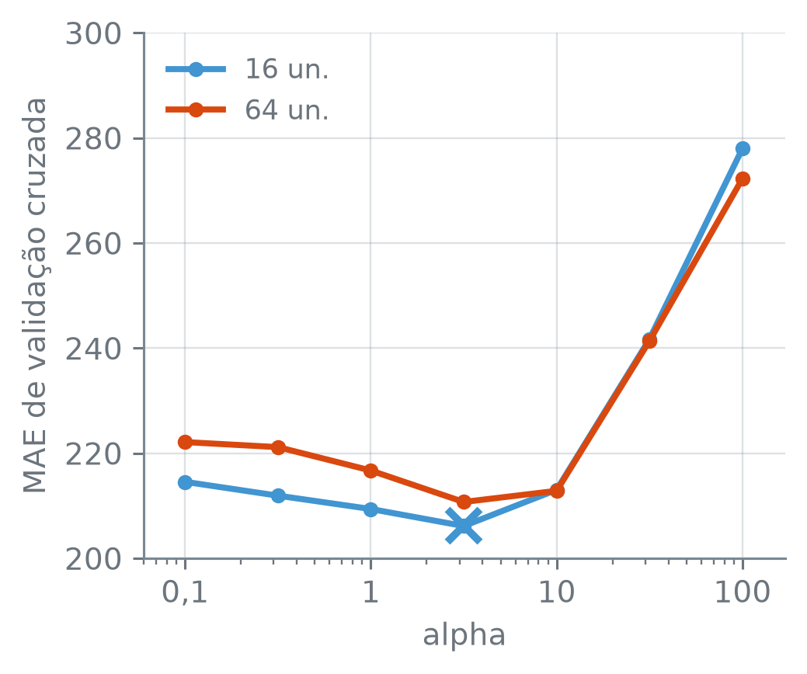
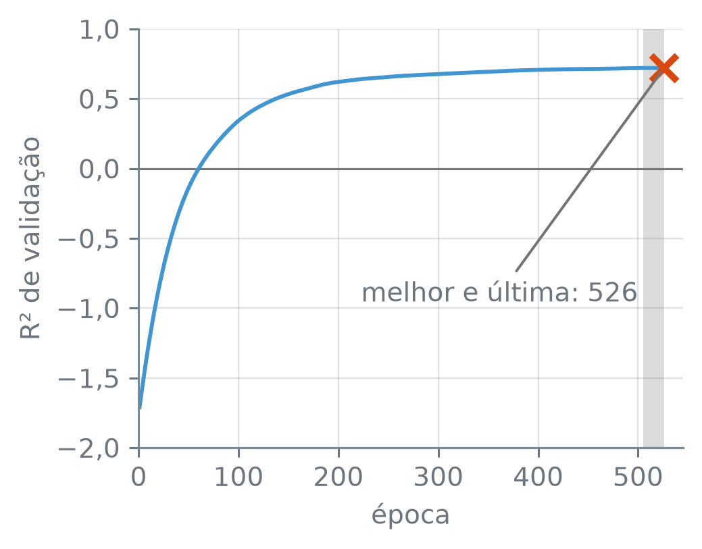

numero_br = lambda valor, casas=2: (
f"{valor:,.{casas}f}"
.replace(",", "_").replace(".", ",")
.replace("_", ".").replace("-", "−")
)MLPClassifier e MLPRegressor na Prática
Nota
Esta seção corresponde às seções 10.7.4 e 10.9.1 de James et al. (2023).
O salário de um jogador de beisebol, em milhares de dólares, depende das estatísticas dele: rebatidas na temporada, anos de carreira, home runs acumulados. São 19 colunas, e as escalas delas vão de indicadoras que valem 0 ou 1 a contagens de carreira na casa das dezenas de milhares. O que é preciso fazer com esses números antes de pedir a uma rede neural que preveja o salário? E, com a rede montada, como escolher quantas unidades ela tem e quanto penalizar os pesos, sem olhar os jogadores de teste?
A função numero_br escreve os números com a pontuação brasileira:
Os jogadores e duas referências
A tabela Hitters traz as estatísticas de 1986 dos jogadores das grandes ligas e o salário de 1987, em milhares de dólares. Descartados os jogadores sem salário, as três colunas de texto (liga, divisão e liga na temporada seguinte) viram indicadoras, e um terço dos jogadores fica para teste. Em seguida, a distância entre as escalas, com o maior dos máximos das colunas e o menor deles, cada um com o nome da coluna:
hitters = pd.read_csv(
"dados/Hitters.csv").dropna()
y = hitters["salario"]
X = pd.get_dummies(
hitters.drop(columns="salario"), drop_first=True, dtype=float)
print("jogadores:", len(X), "· colunas:", X.shape[1])
treino_X, teste_X, treino_y, teste_y = train_test_split(
X, y, test_size=1/3, random_state=14)
print("treino:", len(treino_X), "· teste:", len(teste_X))
maximos = X.max()
print("maior valor:", numero_br(maximos.max(), 0))
print(" em", maximos.idxmax())
print("menor máximo:", numero_br(maximos.min(), 0))
print(" em", maximos.idxmin())jogadores: 263 · colunas: 19
treino: 175 · teste: 88
maior valor: 14.053
em vezes_ao_bastao_carreira
menor máximo: 1
em liga_Nacionalpd.get_dummies(df, drop_first=True, dtype=float) — troca cada coluna de texto por colunas indicadoras, uma por categoria, com 1 na categoria da linha e 0 nas outras; drop_first=True deixa de fora a primeira categoria de cada coluna, em ordem alfabética, que fica representada por todas as indicadoras em 0, e dtype=float escreve as indicadoras como números.
São 263 jogadores e 19 colunas, com 175 jogadores no treino e 88 no teste. A coluna vezes_ao_bastao_carreira chega a 14.053; a indicadora liga_Nacional não passa de 1.
Duas previsões servem de referência. A mais simples ignora as colunas e prevê para todo jogador de teste o salário médio do treino. A outra é a regressão linear por mínimos quadrados com as 19 colunas. O erro é medido pelo erro absoluto médio (MAE, de mean absolute error), \[ \mathrm{MAE} = \frac{1}{n}\sum_{i=1}^{n} |y_i - \hat y_i|, \] a distância média entre o salário e a previsão, em milhares de dólares, a mesma unidade do salário:
media = treino_y.mean()
print("salário médio no treino:", numero_br(media, 0))
nulo = np.full(len(teste_y), media)
mae_nulo = mean_absolute_error(teste_y, nulo)
print("MAE da média:", numero_br(mae_nulo))
linear = LinearRegression().fit(treino_X, treino_y)
previsto = linear.predict(teste_X)
mae_linear = mean_absolute_error(teste_y, previsto)
print("MAE da linear:", numero_br(mae_linear))
print("R² da linear:", numero_br(r2_score(teste_y, previsto)))salário médio no treino: 557
MAE da média: 344,05
MAE da linear: 232,06
R² da linear: 0,48np.full(n, valor)— um vetor comncópias devalor.mean_absolute_error(y, previsto)— o MAE, a média de \(|y_i - \hat y_i|\).r2_score(y, previsto)— o \(R^2\), a fração da variação deyem torno da média que a previsão explica; é 1 com a previsão perfeita, 0 com a média deycomo previsão, e negativo quando a previsão erra mais que essa média.
Prevendo a média, 557 mil dólares, o MAE de teste é de 344,05 mil dólares; a regressão linear o reduz a 232,06, com \(R^2\) de teste de 0,48. Uma rede que erre mais que 344,05 está pior que ignorar as colunas.
Escala: dos preditores e da resposta
Nas seções 14.1 e 14.3, a resposta era o log do salário. Aqui ela fica em milhares de dólares, para que o MAE se leia direto em dinheiro. Os preditores vão padronizados por um StandardScaler, como na seção 14.1, numa rede de uma camada escondida com 64 unidades, ajustada com o método padrão, o adam, e os demais padrões do MLPRegressor.
O ajuste pode terminar com um aviso, e o aviso diz algo sobre ele. A função ajusta_e_avisa ajusta o modelo guardando os avisos numa lista, em vez de mostrá-los, e devolve o tipo de cada um:
from warnings import catch_warnings, simplefilter
def ajusta_e_avisa(modelo, X, y):
with catch_warnings(record=True) as avisos:
simplefilter("always")
modelo.fit(X, y)
return [a.category.__name__ for a in avisos]catch_warnings(record=True), do módulowarnings— num blocowith, guarda numa lista, aquiavisos, os avisos emitidos pelo código, em vez de mostrá-los;simplefilter("always")faz todo aviso entrar na lista..category.__name__é o nome do tipo de cada aviso.
Antes de rodar, um palpite: com o salário em milhares de dólares, a rede erra mais ou menos que a média?
so_X = Pipeline([
("escala", StandardScaler()),
("rede", MLPRegressor(
hidden_layer_sizes=(64,),
random_state=14)),
])
avisos = ajusta_e_avisa(so_X, treino_X, treino_y)
print("avisos:", len(avisos), *avisos)
print("lote:", min(200, len(treino_X)), "de", len(treino_X))
print("épocas:", so_X[-1].n_iter_)
perda = so_X[-1].loss_curve_
zero = 0.5 * (treino_y ** 2).mean()
print("perda na 1ª / a de prever 0:",
numero_br(perda[0] / zero))
print("perda na 200ª / na 1ª:",
numero_br(perda[-1] / perda[0]))
prev_so_X = so_X.predict(teste_X)
mae_so_X = mean_absolute_error(teste_y, prev_so_X)
print("MAE:", numero_br(mae_so_X))
print("pior que a média:", mae_so_X > mae_nulo)
print("maior previsão:", numero_br(prev_so_X.max(), 0))
print("mediana do teste:", numero_br(teste_y.median(), 1))avisos: 1 ConvergenceWarning
lote: 175 de 175
épocas: 200
perda na 1ª / a de prever 0: 1,00
perda na 200ª / na 1ª: 0,93
MAE: 471,09
pior que a média: True
maior previsão: 121
mediana do teste: 387,5Pipeline([(nome, passo), ...])— encadeia os passos, como omake_pipeline, mas com um nome escolhido para cada um; os nomes servem para chegar a um passo (so_X[-1]é o último) e aos parâmetros dele.*avisos— noprint, passa cada item da lista como um valor separado; com a lista vazia, não imprime nada..loss_curve_— a perda de treino de cada época: metade do erro quadrático médio, na escala da resposta que a rede vê, mais a penalidade, calculada lote a lote enquanto os pesos mudam.teste_y.median()— a mediana.
O ajuste emitiu um ConvergenceWarning: o método chegou ao limite de iterações, 200 épocas no padrão, sem convergir. Com lotes de até 200 jogadores, o padrão, os 175 de treino formam um lote só: cada época é um único passo de gradiente, e as 200 épocas são 200 passos.
A perda da primeira época, em milhares de dólares ao quadrado, é praticamente a de prever zero para todo jogador, metade da média dos salários ao quadrado; a razão entre as duas é 1,00. Os pesos iniciais são sorteados perto de zero, e a rede começa prevendo perto de zero. Com a taxa de aprendizado padrão, a perda da 200ª época ainda é 0,93 da primeira, e a maior previsão de teste é de 121 mil dólares, quando metade dos jogadores de teste ganha mais de 387,5. O MAE de teste, 471,09, é pior que o da média.
Há duas saídas: aumentar o limite de épocas ou pôr a resposta em outra escala. A primeira, com o salário ainda em milhares de dólares e um limite dez vezes maior:
mais_epocas = clone(so_X).set_params(
rede__max_iter=2000)
avisos = ajusta_e_avisa(mais_epocas, treino_X, treino_y)
print("avisos:", len(avisos), *avisos)
print("épocas:", mais_epocas[-1].n_iter_)
prev_mais = mais_epocas.predict(teste_X)
mae_mais = mean_absolute_error(teste_y, prev_mais)
print("MAE:", numero_br(mae_mais))
print("pior que a linear:", mae_mais > mae_linear)avisos: 1 ConvergenceWarning
épocas: 2000
MAE: 238,90
pior que a linear: Trueclone(modelo)— uma cópia do modelo com os mesmos parâmetros, ainda sem ajuste..set_params(nome=valor)— muda parâmetros; numPipeline, o nome diz o caminho, com os nomes separados por dois sublinhados:rede__max_iteré omax_iterdo passorede.
Com 2.000 passos, o aviso continua: a rede usou as 2.000 épocas sem convergir. O MAE de teste caiu para 238,90, mas ficou pior que o da regressão linear.
A outra saída é mudar a escala da resposta. O TransformedTargetRegressor padroniza a resposta antes do ajuste, e a rede aprende a prever o salário em desvios padrão a partir da média; na previsão, ele desfaz a padronização e devolve milhares de dólares. Para ver o que a padronização dos preditores faz, o primeiro ajuste com ele padroniza só a resposta e deixa as 19 colunas como estão. E se os preditores ficarem crus, a rede erra quanto?
so_y = TransformedTargetRegressor(
regressor=MLPRegressor(
hidden_layer_sizes=(64,), random_state=14),
transformer=StandardScaler())
avisos = ajusta_e_avisa(so_y, treino_X, treino_y)
print("avisos:", len(avisos), *avisos)
print("épocas:", so_y.regressor_.n_iter_)
z = StandardScaler().fit_transform(
treino_y.to_frame())
print("perda de prever a média:",
numero_br(0.5 * (z ** 2).mean()))
perda_y = np.array(
so_y.regressor_.loss_curve_)
menor = perda_y.argmin()
print("menor perda na época", menor + 1)
print(" perda:", numero_br(perda_y[menor], 0))
depois = perda_y[menor + 1:]
print(" depois, todas acima:",
(depois > perda_y[menor]).all())
prev_so_y = so_y.predict(teste_X)
print("MAE:", numero_br(
mean_absolute_error(teste_y, prev_so_y), 0))avisos: 0
épocas: 29
perda de prever a média: 0,50
menor perda na época 18
perda: 2.702
depois, todas acima: True
MAE: 56.829TransformedTargetRegressor(regressor, transformer)— ajusta oregressorna resposta transformada pelotransformer, aqui a padronização, e desfaz a transformação nas previsões..regressor_— o regressor já ajustado, lá dentro..fit_transform(x)— ajusta o padronizador emxe devolvexjá padronizado.serie.to_frame()— a série como uma tabela de uma coluna, a forma que oStandardScalerrecebe.v.argmin()— a posição do menor valor dev, contada a partir de 0; por isso a época émenor + 1.
O ajuste parou em 29 épocas, sem aviso. Na escala padronizada da resposta, prever a média para todo jogador custa uma perda de 0,50; a menor perda da rede foi de 2.702, na época 18, e todas as seguintes ficaram acima dela. Sem uma melhora de ao menos uma pequena tolerância por mais de 10 épocas seguidas, o MLPRegressor para, e parar sem aviso, aqui, não quer dizer que o ajuste convergiu: o MAE de teste é de 56.829 mil dólares. Os pesos iniciais de todas as colunas são sorteados no mesmo intervalo, e, na soma \(w_{k0} + \sum_j w_{kj}X_j\) de cada unidade, a coluna que chega a 14.053 pesa milhares de vezes mais que a indicadora de 0 ou 1.
Com as duas escalas, preditores e resposta padronizados, a rede de 64 unidades ajusta assim, com o limite padrão de 200 épocas e com o de 2.000. A função rede_padronizada monta o pipeline e repassa ao MLPRegressor os parâmetros dados por nome:
def rede_padronizada(**parametros):
rede = MLPRegressor(
random_state=14, **parametros)
return Pipeline([
("escala", StandardScaler()),
("rede", TransformedTargetRegressor(
rede, transformer=StandardScaler())),
])
redes = {}
for limite in (200, 2000):
redes[limite] = rede_padronizada(
hidden_layer_sizes=(64,), max_iter=limite)
avisos = ajusta_e_avisa(
redes[limite], treino_X, treino_y)
ajustada = redes[limite][-1].regressor_
print(f"max_iter {limite}:")
print(" avisos:", len(avisos), *avisos)
print(" épocas:", ajustada.n_iter_)
prev_escala = redes[2000].predict(teste_X)
mae_escala = mean_absolute_error(teste_y, prev_escala)
print("MAE com 2.000:", numero_br(mae_escala))
print("abaixo da linear:", mae_escala < mae_linear)
print("abaixo da de mil US$:", mae_escala < mae_mais)max_iter 200:
avisos: 1 ConvergenceWarning
épocas: 200
max_iter 2000:
avisos: 0
épocas: 491
MAE com 2.000: 213,77
abaixo da linear: True
abaixo da de mil US$: TrueCom o limite padrão de 200 épocas, o ConvergenceWarning volta: o ajuste ainda não tinha convergido. Com o limite de 2.000, ele para sozinho em 491 épocas, sem aviso, e o MAE de teste fica em 213,77, abaixo do da regressão linear e do da rede com o salário em milhares de dólares e o mesmo limite. O mesmo aviso apareceu nas duas redes de 200 épocas, com causas diferentes: com o salário em milhares de dólares, nem 2.000 épocas bastaram; com as duas escalas, bastou aumentar o limite.
A figura compara as previsões de teste dessas duas redes de 64 unidades com limite de 2.000, que diferem só na escala da resposta:
eixo = (-500, 2500)
paineis = [
(prev_mais, "resposta em mil US$"),
(prev_escala, "resposta padronizada"),
]
for previsao, titulo in paineis:
print(titulo + ":")
print(" MAE:", numero_br(
mean_absolute_error(teste_y, previsao)))
print(" abaixo do observado:",
(previsao < teste_y).sum(), "de", len(teste_y))
print(" previsões negativas:", (previsao < 0).sum())
print(" a menor:", numero_br(previsao.min(), 0))
dentro = [
eixo[0] < p.min() and p.max() < eixo[1]
for p in (teste_y, prev_mais, prev_escala)]
print("tudo dentro do eixo:", all(dentro))
fig, eixos = plt.subplots(
2, 1, figsize=(3.8, 6.0),
sharex=True, sharey=True)
for ax, (previsao, titulo) in zip(eixos, paineis):
ax.plot(eixo, eixo, color="0.45",
linestyle="--", linewidth=1)
ax.scatter(teste_y, previsao, s=14, color="C1",
alpha=0.7, linewidths=0)
ax.set_title(titulo)
ax.set_ylabel("previsto (mil US$)")
ax.set_xlim(*eixo)
ax.set_ylim(*eixo)
ax.set_aspect("equal")
eixos[1].set_xlabel("observado (mil US$)")
for ax in eixos:
for lado in (ax.xaxis, ax.yaxis):
lado.set_major_formatter(
lambda v, _: numero_br(v, 0))
plt.tight_layout()
plt.show()resposta em mil US$:
MAE: 238,90
abaixo do observado: 40 de 88
previsões negativas: 1
a menor: −2
resposta padronizada:
MAE: 213,77
abaixo do observado: 42 de 88
previsões negativas: 5
a menor: −212
tudo dentro do eixo: True
sharey=True— noplt.subplots, os gráficos dividem também o eixo vertical, e as nuvens de pontos se comparam na mesma escala.ax.set_aspect("equal")— uma unidade vale o mesmo comprimento nos dois eixos, e a diagonal fica a 45 graus.
As duas nuvens se parecem, e a figura sozinha não diz qual rede é melhor; o MAE de teste, 238,90 contra 213,77, diz. Nenhuma das duas impede uma previsão abaixo de zero: com a resposta em milhares de dólares, 1 jogador de teste tem previsão de salário negativa; com a resposta padronizada, 5, a menor de −212 mil dólares. Os dois painéis mostram todos os jogadores de teste: o maior salário e todas as previsões cabem entre −500 e 2.500.
Escolher o tamanho e a penalidade
A rede de 64 unidades com alpha=0.0001, o padrão, foi um palpite: nem o número de unidades nem a força da penalidade foram escolhidos. A penalidade é a da ridge sobre os pesos, da seção 14.3, e o \(\lambda\) que ela representa depende do tamanho do lote. O lote padrão tem \(b = \min(200, n)\) jogadores. Com 175 no treino, ou 140 no ajuste de cada rodada de uma validação cruzada de cinco grupos, ele é o treino inteiro:
for n in (len(treino_X), len(treino_X) * 4 // 5):
print(f"n = {n}: lote de {min(200, n)}")n = 175: lote de 175
n = 140: lote de 140Com um lote só, cada época é um passo, e a perda desse passo no MLPRegressor é metade do erro quadrático médio mais \(\texttt{alpha}/(2n)\) vezes a soma dos quadrados dos pesos. Multiplicada por \(2n\), ela vira \[
\mathrm{RSS} + \lambda \sum_j \theta_j^2, \qquad \lambda = \texttt{alpha},
\] a soma dos quadrados dos resíduos, na escala padronizada do salário, mais \(\lambda\) vezes a soma dos quadrados dos pesos, sem os vieses. Nessa forma, com o RSS e sem o ½ do scikit-learn, o número passado como alpha é o próprio \(\lambda\). Na seção 14.3, com lotes menores que o treino, a conversão de alpha em \(\lambda\) dependia da razão entre o treino e o lote; aqui, alpha=1 vale \(\lambda = 1\). O mesmo número em alpha é uma penalidade diferente em cada problema, mais um motivo para escolhê-lo pelos dados.
Duas escolhas, portanto: o número de unidades da camada escondida e \(\lambda\). A validação cruzada de cinco grupos da seção 10.3 escolhe as duas juntas, sem tocar nos 88 jogadores de teste. A grade tem sete valores de alpha, de 0,1 (mil vezes o padrão) a 100, igualmente espaçados em escala log, e dois tamanhos de camada, 16 e 64 unidades; o critério é o MAE. Se a grade for larga o bastante, o erro de validação cruzada sobe nas duas pontas. A camada de 16 unidades erra mais ou menos que a de 64?
caminho = "rede__regressor__"
grade = {
caminho + "alpha": np.logspace(-1, 2, 7),
caminho + "hidden_layer_sizes": [(16,), (64,)],
}
metrica = "neg_mean_absolute_error"
busca = GridSearchCV(
rede_padronizada(
hidden_layer_sizes=(16,), max_iter=2000),
grade, cv=KFold(5, shuffle=True, random_state=14),
scoring=metrica)
busca.fit(treino_X, treino_y)
print("candidatos:", len(busca.cv_results_["params"]))
escolha = busca.best_params_
print("camada:", escolha[caminho + "hidden_layer_sizes"])
print("alpha:", numero_br(escolha[caminho + "alpha"]))
print("MAE de validação cruzada:", numero_br(-busca.best_score_))
prev_busca = busca.predict(teste_X)
mae_busca = mean_absolute_error(teste_y, prev_busca)
print("MAE de teste:", numero_br(mae_busca))
print("R² de teste:", numero_br(r2_score(teste_y, prev_busca)))
final = busca.best_estimator_[-1].regressor_
n_coefs = sum(c.size for c in final.coefs_)
n_vieses = sum(v.size for v in final.intercepts_)
print("pesos:", n_coefs + n_vieses)
print("épocas:", final.n_iter_)candidatos: 14
camada: (16,)
alpha: 3,16
MAE de validação cruzada: 206,14
MAE de teste: 178,34
R² de teste: 0,65
pesos: 337
épocas: 859GridSearchCV(modelo, grade, cv, scoring)— ajusta o modelo com cada combinação de valores dagradeem cada grupo da validação cruzadacv, e fica com a combinação de melhor nota média; no fim, reajusta essa combinação com todo o treino.- As chaves da grade dizem o caminho até o parâmetro, como no
set_params:rede__regressor__alphaé oalphadoregressordo passorede, ecaminhoguarda a parte comum. scoring="neg_mean_absolute_error", guardado emmetrica, usa o MAE com o sinal trocado, porque a busca procura a maior nota.KFold(5, shuffle=True, random_state=14)— os cinco grupos, com os jogadores embaralhados com semente 14 antes da divisão.np.logspace(-1, 2, 7)— sete números de \(10^{-1}\) a \(10^{2}\), igualmente espaçados na escala log.busca.best_params_— a combinação escolhida;busca.best_score_, a nota média dela nos grupos;busca.cv_results_, os resultados de todos os candidatos;busca.best_estimator_, o modelo reajustado com todo o treino.
A busca ajustou 14 candidatos, cada um em cinco grupos, e escolheu a camada de 16 unidades com alpha 3,16, combinação que dá um MAE de validação cruzada de 206,14 mil dólares. Reajustada com os 175 jogadores, essa rede tem 337 pesos, para em 859 épocas e erra, em média, 178,34 mil dólares nos jogadores de teste, com \(R^2\) de 0,65. A rede de 64 unidades sem escolha nenhuma tinha errado 213,77, e a linear, 232,06.
O MAE de teste, 178,34, ficou abaixo do de validação cruzada, 206,14. Os dois oscilam: o de teste vem de 88 jogadores numa divisão só, e o de validação cruzada, da média de cinco grupos de 35. Por isso as comparações acima são entre MAE de teste, nos mesmos 88 jogadores.
A figura mostra o MAE de validação cruzada de cada candidato contra alpha, uma curva por tamanho de camada. O que olhar é a forma de cada curva: se ela desce até um fundo e volta a subir, a grade alcançou as duas pontas.
tira = lambda c: c.replace("param_" + caminho, "")
resultados = pd.DataFrame(busca.cv_results_)
resultados = resultados.rename(columns=tira)
tamanhos = resultados["hidden_layer_sizes"]
tabela = resultados.pivot_table(
index="alpha",
columns=tamanhos.map(lambda t: f"{t[0]} un."),
values="mean_test_score") * -1
fig, ax = plt.subplots(figsize=(3.8, 3.2))
for coluna, cor in [("16 un.", "C0"), ("64 un.", "C1")]:
ax.plot(tabela.index, tabela[coluna], color=cor,
marker="o", markersize=4, label=coluna)
ax.plot(escolha[caminho + "alpha"], -busca.best_score_,
"x", color="C0", markersize=11, markeredgewidth=2.5,
zorder=3)
ax.set_xscale("log")
ax.set_xlim(0.06, 170)
ax.set_xlabel("alpha")
ax.set_ylabel("MAE de validação cruzada")
ax.xaxis.set_major_formatter(
lambda v, _: f"{v:g}".replace(".", ","))
ax.yaxis.set_major_formatter(lambda v, _: numero_br(v, 0))
ax.legend(loc="upper left")
plt.tight_layout()
plt.show()
alpha, em escala log, para a camada escondida de 16 unidades (azul) e de 64 unidades (laranja). O x marca o candidato escolhido.
df.rename(columns=função)— troca o nome de cada coluna pelo que a função devolve; aqui, a funçãotiraremove o prefixoparam_rede__regressor__.df.pivot_table(index, columns, values)— rearranja os resultados numa tabela com um valor deindexpor linha e um decolumnspor coluna, comvaluesnas células;* -1desfaz o sinal trocado doneg_mean_absolute_error..map(lambda t: f"{t[0]} un.")— escreve cada tupla de tamanhos como texto,(16,)virando “16 un.”.ax.set_xscale("log")— o eixo horizontal em escala log: a distância entre 0,1 e 1 é a mesma que entre 1 e 10.ax.plot(..., marker="o", markersize=4)— marca cada valor da grade com um ponto na linha;markeredgewidth=2.5é a espessura do traço do marcador, aqui o x.
O que a figura mostra, conferido nos números:
curva_16 = tabela["16 un."]
abaixo = curva_16 < tabela["64 un."]
print("16 un. abaixo de 64 un.:",
abaixo.sum(), "de", len(tabela))
alphas_abaixo = tabela.index[abaixo.to_numpy()]
print(" nos alpha:",
", ".join(numero_br(a) for a in alphas_abaixo))
fundo = curva_16.to_numpy().argmin()
print("16 un., fundo em", numero_br(tabela.index[fundo]))
desce = (np.diff(curva_16.iloc[:fundo + 1]) < 0).all()
sobe = (np.diff(curva_16.iloc[fundo:]) > 0).all()
print(" cai até ele e sobe depois:", bool(desce and sobe))
print(" em 0,10:", numero_br(curva_16.iloc[0]))
print(" em 100,00:", numero_br(curva_16.iloc[-1]))
grandes = tabela.loc[tabela.index >= 10]
distancia = (grandes["16 un."] - grandes["64 un."]).abs()
print("maior distância em alpha ≥ 10:",
numero_br(distancia.max()))16 un. abaixo de 64 un.: 4 de 7
nos alpha: 0,10, 0,32, 1,00, 3,16
16 un., fundo em 3,16
cai até ele e sobe depois: True
em 0,10: 214,55
em 100,00: 277,98
maior distância em alpha ≥ 10: 5,73np.diff(v)— a diferença de cada valor para o anterior.serie.abs()— o valor absoluto de cada elemento.
A camada de 16 unidades fica abaixo da de 64 em 4 dos 7 valores de alpha, os quatro menores, de 0,10 a 3,16. A curva de 16 unidades cai até o fundo, em 3,16, e sobe depois dele, até 277,98 em 100; na outra ponta, em 0,10, fica em 214,55. Com penalidade de menos ou de mais, o erro sobe, como na ridge da seção 11.3, e a grade alcança as duas pontas. A vantagem das 16 unidades vale para esta grade, nestes jogadores; com outra divisão em grupos, as curvas podem mudar.
Parada antecipada
A parada antecipada da seção 14.3 existe como opção do MLPRegressor e do MLPClassifier. Com early_stopping=True, a rede separa uma parte do treino para validação, mede o \(R^2\) nela depois de cada época e para quando ele deixa de melhorar. Na rede escolhida pela busca, a opção fica ligada com um quinto do treino para validação e 20 épocas de paciência. Com 35 jogadores a menos no ajuste dos pesos, a rede erra mais ou menos no teste?
com_parada = clone(busca.best_estimator_)
com_parada[-1].regressor.set_params(
early_stopping=True,
validation_fraction=0.2,
n_iter_no_change=20)
com_parada.fit(treino_X, treino_y)
parou = com_parada[-1].regressor_
print("jogadores de validação:",
math.ceil(0.2 * len(treino_X)))
print("épocas:", parou.n_iter_)
r2 = pd.Series(parou.validation_scores_,
index=range(1, parou.n_iter_ + 1))
print("melhor R² de validação:", numero_br(r2.max(), 4))
print(" na época", r2.idxmax())
print(" é a última:", r2.idxmax() == parou.n_iter_)
print("tol:", numero_br(parou.tol, 4))
melhor_antes = r2.cummax().shift()
sem_melhora = r2 < melhor_antes + parou.tol
melhoras = sem_melhora[~sem_melhora]
ultima = melhoras.index.max()
print("última melhora ≥ tol:", ultima)
print("nas 21 últimas épocas,")
print(" nenhuma melhora ≥ tol:",
sem_melhora.iloc[-21:].all())
previsto_p = com_parada.predict(teste_X)
mae_parada = mean_absolute_error(teste_y, previsto_p)
print("MAE de teste:", numero_br(mae_parada))
print("acima do sem parada:", mae_parada > mae_busca)jogadores de validação: 35
épocas: 526
melhor R² de validação: 0,7200
na época 526
é a última: True
tol: 0,0001
última melhora ≥ tol: 505
nas 21 últimas épocas,
nenhuma melhora ≥ tol: True
MAE de teste: 193,42
acima do sem parada: Truecom_parada[-1].regressor— oMLPRegressordentro doTransformedTargetRegressor, ainda sem ajuste;.set_paramsmuda os parâmetros dele ali mesmo. O.regressor_, com o sublinhado, é a cópia ajustada.- No
MLPRegressor:early_stopping=Trueliga a parada antecipada;validation_fractioné a fração do treino separada para validação (o padrão é 0,1);n_iter_no_changeé a paciência, em épocas (o padrão é 10). .validation_scores_— o \(R^2\) de validação depois de cada época.serie.cummax()— em cada posição, o maior valor até ali;.shift()empurra a série uma posição para baixo, e cada época fica com o melhor valor das anteriores.sem_melhora[~sem_melhora]— as épocas em quesem_melhoraéFalse, as de melhora de ao menostol;~trocaTrueporFalsee vice-versa.math.ceil(x)— arredondaxpara cima, como oscikit-learnfaz com o tamanho da validação.
Na regra de parada, uma época conta como melhora só se superar o melhor valor até ali por ao menos uma tolerância, tol; o ajuste para quando passam mais de n_iter_no_change épocas seguidas sem melhora, e os pesos guardados são os da época de maior valor de validação. No classificador, o valor medido é a taxa de acerto, e não a perda, e a seção 14.3 mostrou que esses dois critérios podem levar a paradas diferentes.
São 35 jogadores de validação, e o ajuste parou em 526 épocas. A última melhora de ao menos tol, 0,0001, foi na época 505; nas 21 seguintes, uma a mais que a paciência de 20, nenhuma época superou o melhor \(R^2\) das anteriores por ao menos isso, e o ajuste parou. Mesmo assim, a melhor época foi a própria última, com \(R^2\) de validação de 0,7200: ela superou as anteriores, mas por menos que tol. Uma melhora pequena assim não zera a contagem da paciência, mas os pesos guardados são sempre os do maior \(R^2\); como ele foi o da última época, não houve o que desfazer.
print("R² na época 1:", numero_br(r2.iloc[0], 2))
print(" na época 100:", numero_br(r2.loc[100], 2))
print(" na época 426:", numero_br(r2.loc[426], 4))
print("1ª época acima de 0:", (r2 > 0).idxmax())
fig, ax = plt.subplots(figsize=(3.8, 3.0))
ax.axvspan(ultima, r2.index[-1], color="0.45",
alpha=0.25, linewidth=0)
ax.plot(r2.index, r2, color="C0", linewidth=1.5)
ax.plot(r2.idxmax(), r2.max(), "x", color="C1",
markersize=10, markeredgewidth=2.5, zorder=3)
traco = {"arrowstyle": "-", "color": "0.45"}
ax.annotate(f"melhor e última: {r2.idxmax()}",
(r2.idxmax(), r2.max()), xytext=(500, -0.9),
ha="right", va="center", arrowprops=traco)
ax.axhline(0, color="0.45", linewidth=0.8, zorder=0)
ax.set_xlim(0, 545)
ax.set_xlabel("época")
ax.set_ylabel("R² de validação")
ax.yaxis.set_major_formatter(lambda v, _: numero_br(v, 1))
plt.tight_layout()
plt.show()R² na época 1: −1,71
na época 100: 0,34
na época 426: 0,7108
1ª época acima de 0: 61
alpha 3,16 e parada antecipada. A faixa cinza cobre as 21 épocas depois da última melhora de ao menos tol, a 505; o x marca a época de maior R², que é também a época em que o ajuste parou.
ax.axvspan(x0, x1)— pinta uma faixa vertical entrex0ex1;alphaé a opacidade."arrowstyle": "-"— noarrowpropsdoax.annotate, troca a seta por um traço sem ponta, do texto emxytextaté o ponto marcado.
O \(R^2\) de validação começa em −1,71 na época 1, pior que prever a média, que daria perto de 0, e passa de 0 na época 61. Na época 100 já está em 0,34; nas últimas 100 épocas, da 426 à 526, ganha só 0,0092 (de 0,7108 a 0,7200). A curva quase parou de subir, e é nesse trecho que a paciência se esgota.
O MAE de teste ficou em 193,42, contra 178,34 da mesma rede sem parada. A parada antecipada tira 35 dos 175 jogadores do ajuste dos pesos em troca de um critério de parada, e nesta divisão a troca não compensou.
O mesmo para classificar
O MLPClassifier segue o mesmo caminho. A tabela Heart tem 13 medidas de pacientes com dor no peito e, em doenca_cardiaca, o resultado de uma angiografia: se ela confirmou ou não doença cardíaca. A busca é do mesmo tipo, com nove valores de alpha, de 0,01 a 100, e os mesmos dois tamanhos de camada. Os pacientes ficam divididos ao meio entre treino e teste, na mesma proporção de doentes, e o critério é a taxa de erro de validação cruzada:
coracao = pd.read_csv(
"dados/Heart.csv").dropna()
alvo = "doenca_cardiaca"
y_c = coracao[alvo]
X_c = pd.get_dummies(
coracao.drop(columns=alvo), drop_first=True,
dtype=float)
treino_Xc, teste_Xc, treino_yc, teste_yc = train_test_split(
X_c, y_c, test_size=0.5, random_state=14, stratify=y_c)
print("pacientes:", len(X_c), "· medidas:", coracao.shape[1] - 1)
print("treino:", len(treino_Xc), "· teste:", len(teste_Xc))
classificador = Pipeline([
("escala", StandardScaler()),
("rede", MLPClassifier(
hidden_layer_sizes=(16,), max_iter=2000,
random_state=14)),
])
grupos = StratifiedKFold(5, shuffle=True, random_state=14)
camada_c = "rede__hidden_layer_sizes"
grade_c = {
"rede__alpha": np.logspace(-2, 2, 9),
camada_c: [(16,), (64,)],
}
busca_c = GridSearchCV(
classificador, grade_c, cv=grupos, scoring="accuracy")
busca_c.fit(treino_Xc, treino_yc)
print("candidatos:", len(busca_c.cv_results_["params"]))
escolha_c = busca_c.best_params_
print("camada:", escolha_c[camada_c])
print("alpha:", numero_br(escolha_c["rede__alpha"]))
print("erro de validação cruzada:",
numero_br(1 - busca_c.best_score_, 4))
erros_rede = (busca_c.predict(teste_Xc) != teste_yc).sum()
print("erros de teste:", erros_rede, "de", len(teste_yc))pacientes: 297 · medidas: 13
treino: 148 · teste: 149
candidatos: 18
camada: (16,)
alpha: 31,62
erro de validação cruzada: 0,1821
erros de teste: 27 de 149StratifiedKFold(5, shuffle=True, random_state=14)— os cinco grupos, com a mesma proporção de doentes em cada um.scoring="accuracy"— a nota é a taxa de acerto, e 1 menos ela é a taxa de erro.
Dos 297 pacientes, 148 ficam no treino e 149 no teste. Com lotes de até 200, o lote volta a ser o treino inteiro. O MLPClassifier minimiza a entropia cruzada média mais \(\texttt{alpha}/(2n)\) vezes a soma dos quadrados dos pesos. Essa perda não tem o ½ da regressão, e por isso aqui \(\lambda\) vale a metade de alpha: multiplicada por \(n\), ela vira a entropia cruzada somada da seção 14.3 mais \(\lambda = \texttt{alpha}/2\) vezes a soma dos quadrados dos pesos. É a conta \(\lambda = \texttt{alpha}\cdot n/(2b)\) daquela seção, com \(b = n\).
A busca comparou 18 candidatos e escolheu a camada de 16 unidades com alpha 31,62, com erro de validação cruzada de 0,1821; a rede reajustada erra 27 dos 149 pacientes de teste. A tabela da busca vem abaixo e, depois dela, a taxa de erro de validação cruzada de uma referência que prevê “não” para todos os pacientes:
res_c = pd.DataFrame(busca_c.cv_results_)
res_c = res_c.rename(
columns=lambda c: c.replace("param_rede__", ""))
tamanhos_c = res_c["hidden_layer_sizes"]
erro_c = 1 - res_c.pivot_table(
index="alpha",
columns=tamanhos_c.map(lambda t: f"{t[0]} un."),
values="mean_test_score")
erro_c.index = [numero_br(a) for a in erro_c.index]
erro_c.index.name = "alpha"
erro_c.columns.name = None
print(erro_c.map(lambda v: numero_br(v, 4)).to_string())
empate = (erro_c.loc["31,62", "16 un."]
== erro_c.loc["31,62", "64 un."])
print("empate em 31,62:", empate)
sempre_nao = DummyClassifier(
strategy="constant", constant="não")
acertos_nao = cross_val_score(
sempre_nao, treino_Xc, treino_yc,
cv=grupos, scoring="accuracy")
erro_nao = 1 - acertos_nao.mean()
print("prever sempre 'não':", numero_br(erro_nao, 4))
erro_100 = erro_c.loc["100,00", "16 un."]
print("igual a alpha 100 (4 casas):",
round(erro_nao, 4) == round(erro_100, 4)) 16 un. 64 un.
alpha
0,01 0,2028 0,2234
0,03 0,2028 0,2234
0,10 0,2028 0,2234
0,32 0,2097 0,2303
1,00 0,2368 0,2234
3,16 0,1963 0,2030
10,00 0,1959 0,1825
31,62 0,1821 0,1821
100,00 0,4593 0,4593
empate em 31,62: True
prever sempre 'não': 0,4593
igual a alpha 100 (4 casas): TrueDummyClassifier(strategy="constant", constant="não")— um classificador que ignora as colunas e prevê sempre a classeconstant; serve de referência.cross_val_score(modelo, X, y, cv, scoring)— a nota do modelo em cada grupo da validação cruzada;.mean()tira a média dos cinco grupos.
Na grade, o erro não cai de forma regular com alpha: na camada de 16 unidades, ele sobe de 0,2028 para 0,2368 em alpha 1, desce até 0,1821 em 31,62 e salta para 0,4593 em 100. Em 31,62, as duas camadas empatam, e a busca fica com o que vem antes na ordem da grade, o de 16 unidades. Em alpha 100, o erro de 0,4593 é, com quatro casas, o de prever “não” para todos os pacientes: com a penalidade forte demais, a rede não faz melhor que ignorar as medidas.
A referência linear é a regressão logística sem penalidade, avaliada nos mesmos grupos:
logistica = Pipeline([
("escala", StandardScaler()),
("logistica", LogisticRegression(
C=np.inf, solver="newton-cholesky",
tol=1e-8)),
])
acertos = cross_val_score(
logistica, treino_Xc, treino_yc,
cv=grupos, scoring="accuracy")
print("logística, validação cruzada:",
numero_br(1 - acertos.mean(), 4))
logistica.fit(treino_Xc, treino_yc)
erros_log = (logistica.predict(teste_Xc) != teste_yc).sum()
print("logística, erros de teste:", erros_log)
print("diferença no teste:", abs(erros_rede - erros_log), "paciente(s)")logística, validação cruzada: 0,2297
logística, erros de teste: 26
diferença no teste: 1 paciente(s)LogisticRegression(C=np.inf, solver="newton-cholesky", tol=1e-8) — a logística sem penalidade (C infinito), com um método de busca e uma tolerância que levam ao mesmo ponto em máquinas diferentes.
A logística sem penalidade tem erro de validação cruzada de 0,2297 e erra 26 pacientes de teste. Os dois erros de validação cruzada não se comparam de igual para igual: o 0,1821 da rede é o menor de 18 candidatos medidos nos mesmos grupos e, como na seção 11.5, tende a sair otimista; o da logística não passou por escolha nenhuma. No teste, que nenhuma das duas usou para escolher, a rede escolhida e a logística ficam a um paciente de distância, com 148 pacientes para ajustar e 149 para medir: nestes dados, a rede não mostra vantagem sobre o modelo linear.
E a parada antecipada, com os valores padrão, na rede escolhida pela busca? Com 148 pacientes de treino, ela ajuda ou atrapalha?
parada_c = clone(busca_c.best_estimator_)
parada_c.set_params(
rede__early_stopping=True)
parada_c.fit(treino_Xc, treino_yc)
mlp = parada_c[-1]
print("camada:", mlp.hidden_layer_sizes,
"· alpha:", numero_br(mlp.alpha))
fracao = mlp.validation_fraction
print("fração de validação:", numero_br(fracao, 1))
print("paciência:", mlp.n_iter_no_change, "épocas")
n_val = math.ceil(fracao * len(treino_Xc))
print("pacientes de validação:", n_val)
print("épocas:", mlp.n_iter_)
acerto_v = pd.Series(mlp.validation_scores_,
index=range(1, mlp.n_iter_ + 1))
print("acerto na época 1:", numero_br(acerto_v.iloc[0], 3))
print(" alguma época acima dela:",
(acerto_v > acerto_v.iloc[0]).any())
print("pesos guardados: época", acerto_v.idxmax())
previsto_c = parada_c.predict(teste_Xc)
print("erros de teste:", (previsto_c != teste_yc).sum())
print("prevendo sempre 'não':", (teste_yc != "não").sum())
print("previsões de teste:")
contagem = pd.Series(previsto_c).value_counts()
print(contagem.to_string())camada: (16,) · alpha: 31,62
fração de validação: 0,1
paciência: 10 épocas
pacientes de validação: 15
épocas: 12
acerto na época 1: 0,467
alguma época acima dela: False
pesos guardados: época 1
erros de teste: 69
prevendo sempre 'não': 69
previsões de teste:
não 129
sim 20A rede é a escolhida pela busca, com 16 unidades e alpha 31,62, agora com a parada antecipada ligada. Com a fração padrão, 0,1, a validação fica com 15 dos 148 pacientes de treino. O acerto nela, na primeira época, é de 0,467, 7 dos 15, e nenhuma das 11 épocas seguintes, até a 12ª, passa dele: a primeira define o melhor valor, e a paciência se esgota antes de outra superá-lo. Os pesos voltam aos de depois da primeira época. A rede prevê “sim” para 20 pacientes de teste e erra 69 dos 149, o mesmo número de erros de prever “não” para todos.
Com o lote igual ao treino, cada época é um único passo de gradiente, e a paciência, contada em épocas, conta passos. A parada veio de poucos passos, ou de uma validação pequena demais? A primeira contraprova mantém os mesmos 15 pacientes de validação e aumenta a paciência para 100 épocas:
longa = clone(parada_c).set_params(
rede__n_iter_no_change=100)
longa.fit(treino_Xc, treino_yc)
mlp_longa = longa[-1]
fracao_l = mlp_longa.validation_fraction
print("pacientes de validação:",
math.ceil(fracao_l * len(treino_Xc)))
acerto_l = pd.Series(
mlp_longa.validation_scores_,
index=range(1, mlp_longa.n_iter_ + 1))
antes = mlp.n_iter_
print(f"iguais até a época {antes}:")
inicio_l = acerto_l.iloc[:antes]
print(" acerto de validação:",
inicio_l.equals(acerto_v))
perda_l = mlp_longa.loss_curve_[:antes]
print(" perda de treino:", perda_l == mlp.loss_curve_)
print("acerto na época 1:", numero_br(acerto_l.iloc[0], 3))
primeira = (acerto_l > acerto_l.iloc[0]).idxmax()
print(" superado pela 1ª vez na época", primeira)
print("épocas:", mlp_longa.n_iter_)
print("melhor época:", acerto_l.idxmax())
print(" acerto:", numero_br(acerto_l.max(), 3))
print(" acertos:", round(acerto_l.max() * n_val),
"de", n_val)
erros_longa = (longa.predict(teste_Xc) != teste_yc).sum()
print("erros de teste:", erros_longa)
print("acerto de teste:",
numero_br(1 - erros_longa / len(teste_yc), 3))pacientes de validação: 15
iguais até a época 12:
acerto de validação: True
perda de treino: True
acerto na época 1: 0,467
superado pela 1ª vez na época 82
épocas: 328
melhor época: 227
acerto: 0,867
acertos: 13 de 15
erros de teste: 29
acerto de teste: 0,805serie.equals(outra) — True se as duas séries têm os mesmos rótulos e os mesmos valores, posição a posição.
Até a época 12, as duas redes são a mesma: a mesma perda de treino e o mesmo acerto de validação em cada época. A diferença é só a paciência. Com 100 épocas dela, o acerto de validação só supera o da primeira época na época 82, bem depois da 12ª, em que a paciência de 10 tinha parado o ajuste. A rede sai do lugar e erra 29 dos 149 pacientes de teste, contra 69 com a paciência padrão.
Com 15 pacientes, o acerto de validação anda de 1/15 em 1/15, e acertar 13 dos 15 na melhor época não quer dizer acertar os pacientes novos na mesma proporção: no teste, a rede erra 29 de 149, um acerto de 0,805.
A segunda contraprova faz o contrário: mantém a paciência padrão, de 10 épocas, e aumenta a validação para 0,2 e 0,3 do treino:
for fracao in (0.2, 0.3):
maior = clone(parada_c)
maior[-1].set_params(
validation_fraction=fracao)
maior.fit(treino_Xc, treino_yc)
rede_m = maior[-1]
acerto_m = pd.Series(rede_m.validation_scores_)
n_maior = math.ceil(fracao * len(treino_Xc))
erros_m = (maior.predict(teste_Xc) != teste_yc).sum()
print(f"validação de {n_maior} pacientes:")
print(" épocas:", rede_m.n_iter_)
print(" melhor época:", acerto_m.idxmax() + 1)
print(" erros de teste:", erros_m)validação de 30 pacientes:
épocas: 18
melhor época: 7
erros de teste: 68
validação de 45 pacientes:
épocas: 12
melhor época: 1
erros de teste: 69Com 30 pacientes de validação, a rede tem a melhor época na 7ª, para na 18ª e erra 68 pacientes de teste; com 45, a melhor época é a primeira, e ela para na 12ª e erra 69. Nas duas, o erro de teste fica a no máximo um paciente dos 69 da paciência padrão, longe dos 29 da paciência de 100. Nesta divisão, a validação maior não tirou a rede do lugar, e a paciência maior tirou: o que a parou na 12ª época foi uma paciência de 10 épocas que aqui são 10 passos.
A receita
Os passos dos dois exemplos:
- Padronizar os preditores num
Pipeline: sem isso, a rede de regressão errou 56.829 mil dólares em média. - Padronizar a resposta, na regressão, com o
TransformedTargetRegressor: com o salário em milhares de dólares, nem 2.000 épocas bastaram, e o MAE de teste, 238,90, ficou acima do da regressão linear. - Ler o
ConvergenceWarningantes de aumentarmax_iter: o mesmo aviso apareceu com a resposta fora de escala, que 2.000 épocas não resolveram, e, com as escalas certas, por falta de épocas. - Escolher o tamanho da camada e
alphajuntos, por validação cruzada, com o teste de fora. - Comparar com uma referência simples: no
Hitters, a rede de 16 unidades erra 178,34 mil dólares, contra 232,06 da linear e 344,05 da média; noHeart, fica a um paciente da logística. - Fixar a semente (
random_state), para que o ajuste, que começa de pesos sorteados, possa ser repetido. - Na parada antecipada, contar os passos da paciência: com o lote igual ao treino, cada época é um passo, e a paciência padrão de 10 épocas parou a rede do
Heartna 12ª, antes de o acerto de validação superar o da primeira época; com 100 épocas de paciência, ela errou 29 pacientes de teste em vez de 69, e aumentar só a validação não bastou. - Descontar a validação do treino: a parte separada para validação sai do ajuste dos pesos, e na regressão a rede com parada, ajustada com 35 jogadores a menos, errou mais no teste que a mesma rede sem parada.
James, Gareth, Daniela Witten, Trevor Hastie, Robert Tibshirani, e Jonathan Taylor. 2023. An Introduction to Statistical Learning with Applications in Python. Springer.